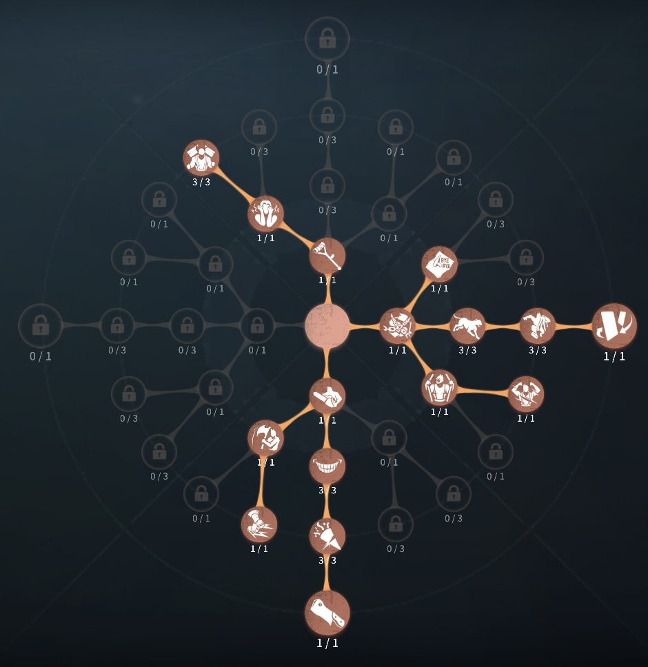
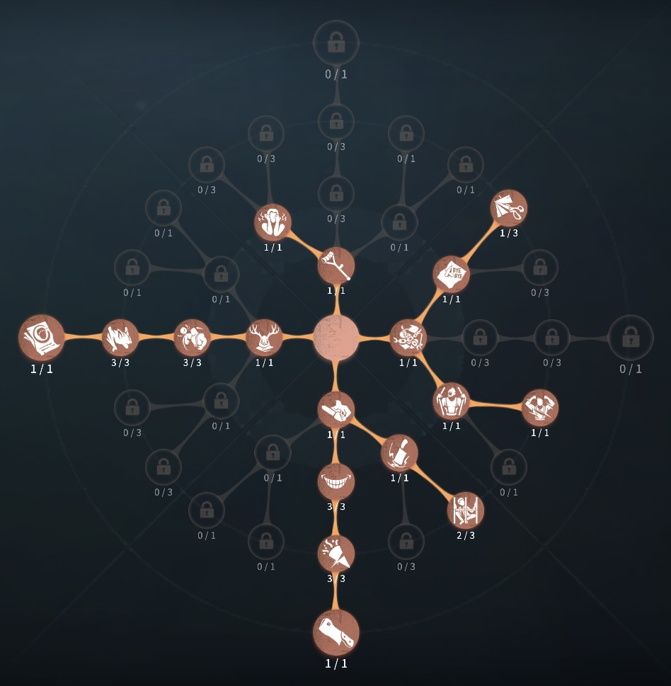

漁師（グレイス）の評価
湿気でポジションを強制退去
外在特質とスキル
特質1:深淵の深み
・グレイスが通った箇所には20秒間淵が生成される。淵を囲むように繋げると、瞬時にその囲い内部のサバイバーに30％の湿気を付与し、囲まれた淵のエリアは形成されてから20秒間持続する。・形成された淵のエリアを利用して別のエリアは形成することはできない。
・投擲で回収された銛の箇所にも淵が生成される。
・淵:
淵の上にいるサバイバーは湿気が毎秒10％増加する。サバイバーが吊られている椅子付近では、湿気増加速度が毎秒6％に低下する。
9秒間湿気進度が増加しないと毎秒5％湿気が減少していく。
湿気が付与されているサバイバーは板窓操作速度10％低下、暗号機、ゲート開門速度20％低下する。
湿気が100％になると1ダメージをうけ湿気がリセットされる。その後5秒間湿気進度が増加しない。
存在感0：漁狩
・その場にモリを突き立てる。もしくは、モリを投擲することができる。モリは長押しした時間に比例して距離が延びる。モリの通過点には湿気の淵が生成され、グレイスは回遊状態になる。・回遊:
回遊状態では移動速度が30％上昇するが、ほとんどの操作と通常攻撃をすることができない。
モリは自身で回収する、回遊時間の最大時間20秒に達する、モリとの距離が42mを超えたときモリは自動的に回収される。回収した通過点にも湿気の淵を生成する。
湿気範囲は、投擲した場所、投擲後のモリを設置した場所、モリを回収した場所の中にも淵を生成する。
存在感1：驚波
・回遊状態の時だけ使用可能。カメラ方向に直線でダッシュする。サバイバーに命中すると30％の湿気を付与する。再度スキルボタンで中断することもできる。存在感2：弄潮
・驚波と淵が生成された時の湿気の付与が50％になる。ハンターの立ち回り方
1. 初動の立ち回り
グレイスの初動は 回遊モード
を活用して、いち早くサバイバーに接近し、通常攻撃でファーストダウンを狙うことが重要となる。
・回遊モードの活用:
✅
開幕から回遊モードで移動し、サバイバーのスポーン位置を素早く把握する。強ポジにサバイバーが逃げ込む前に距離を詰め、通常攻撃を当てる。存在感が溜まるまでは湿気ダメージを与えるのが難しいため、通常攻撃をメインに立ち回る。
・モリの活用:
✅存在感が溜まるまではモリの効果は低いが、強ポジ封じや圧力をかけるために使用する。逃げ道を制限する形でモリを投げることで、サバイバーを狙いやすくする。板や窓枠の近くに撃ち込むことで、移動経路を制限し、攻撃のチャンスを作る。
・タゲチェンの判断:
✅グレイスは初動の弱さが目立つため、
追いづらいサバイバー（傭兵・調香師など）
に当たった場合は、素早くタゲチェンする。「湿気ゲージが溜まりづらい」「強ポジに籠もられる」など、ダウンまで時間がかかると判断したら、すぐに別のターゲットを探す。
2. スキルの使い方
グレイスの特性上、モリと回遊モード時の立ち回りで試合が決まる
・モリの使い方:
・逃走経路をふさぐように設置することで、強ポジへの移動を阻害。存在感MAXになると、モリを回収した際に形成される
淵で湿気ゲージを溜めやすくなる。モリを撃った後、サバイバーが淵を踏む位置に回遊モードで移動し、湿気ゲージを素早く溜める。
・湿気ダメージの活用:
・湿気ゲージが 80～90%
ほど溜まっているサバイバーには、モリを戻すことで湿気ダメージを狙う。回遊モードでサバイバーの周囲を囲むことで、湿気ゲージの蓄積を加速させる。驚波を当てることで湿気ゲージを上昇させ、最終的なダメージに繋げる。
3. チェイス中の立ち回り
グレイスのチェイスでは驚波の使い道を理解することでチェイス時間が左右する。
・存在感0～1のチェイス:
通常攻撃をメインに、湿気ゲージの蓄積を補助として利用。強ポジを囲むように
水の淵 を形成し、サバイバーの移動を制限。可能な限り湿気ゲージを
90%以上 に蓄積させてからダメージを与える。
・存在感MAX後のチェイス:
驚波＋モリ回収による 連続湿気ダメージ
でダウンを狙う。「移動で形成された淵」と「モリ回収で形成された淵」の湿気判定を活用。驚波を2回当てることで、1ダメージを確実に狙う。1撃目を加えた後は、回遊モードで強制的にサバイバーの周囲に湿気の淵を形成し、逃げ道を封じる。
4. 救助狩りの立ち回り
グレイスは救助狩りに強く、適切に立ち回ることで大きなアドバンテージを取れる。
・暗号機への圧力:
存在感2になるまでは 救助狩りよりも暗号機圧を優先
する。湿気の淵を暗号機周辺に形成し、解読を妨害する。
・救助狩りの基本:
モリを椅子の周辺に撃ち込み、回遊モードで水の淵を形成
する。救助役が近づいたら、淵の形成を完成させて湿気ゲージを蓄積。存在感MAXなら、
モリ回収と驚波の組み合わせ で1ダメージを与えやすい。
・地下吊り時のテクニック:
モリを地下の最奥に撃ち込む →
階段上まで移動して湿気の淵を寸止め形成。救助役が地下に降りた瞬間に淵を閉じて湿気ゲージを蓄積。存在感MAXなら、淵の形成×2回で1ダメージ確定。
地下から脱出しようとするサバイバーを階段上で落下攻撃
で仕留める。
5. 注意点
グレイスを使う際には、以下の点に注意しましょう。
🔹 湿気ダメージに頼りすぎない
→ 存在感が低いうちは湿気ダメージを与えにくいため、
通常攻撃を主体に立ち回る。
🔹 サバイバーの強ポジ対策
→ 「工場」「病院」「月の河公園」などの
高低差があるマップでは淵を活かしにくい
ため、モリの配置を意識する。板グルを避けるために
モリを板の間に撃ち込む ことで、グルチェ封じが可能。
🔹 救助狩りのリスク管理
→ 存在感MAXでない場合、無理に救助狩りを狙わず 暗号機圧を優先
する。「湿気ダメージを狙いすぎると攻撃チャンスを逃す」ため、
通常攻撃の機会を逃さない。
おすすめの内在人格
裏向きカード型人格
この内在人格は、怒りと中毒症で粘着を対処、衝動でため攻撃を加速した人格

傲慢型人格
この内在人格は、コントロールで椅子耐久を急かし救助狩り、見捨てを対処し、中毒症でダブルチェイスを対処した人格


みんなのコメント